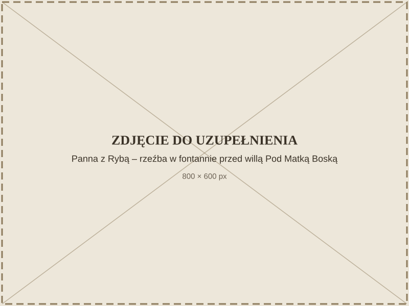
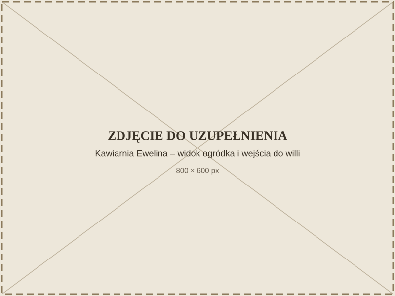

Rzeźba Panna z rybą przy Kawiarni Ewelina
Nagranie
Wolisz przeczytać? Rozwiń transkrypcję
Panna z rybą, umieszczona w fontannie w ogrodzie znanej i lubianej kawiarni Ewelina, powstała w 1979 roku. Zamówiła ją ówczesna właścicielka kawiarni — Ewelina Bartosiewicz. Projekty Panny z rybą ojciec robił już w latach 50-tych. Zachowały się też zdjęcia małych, gipsowych projektów rzeźby.
W ogrodzie mogą Państwo zobaczyć też wiele innych rzeźb — zarówno plenerowych, jak i we wnętrzu portretowych. Wyrzeźbił m.in. właścicielkę, Ewelinę Bartosiewicz. Znajduje się tam też głowa Władysława Tatarkiewicza, którego rzeźbił z natury — z tej właśnie głowy później wykonywał ponadnaturalnej wielkości popiersie, które znajduje się w palmiarni w Parku Zdrojowym.
Jeżeli Państwo pójdą kawałek dalej, ulicą Lipową, po prawej stronie widoczna będzie uliczka Bolesława Prusa. Tam znajduje się dom i pracownia Stanisława Strzyżyńskiego.
Jeżeli będą Państwo chcieli zajrzeć do pracowni i obejrzeć rzeźby z bliska — zapraszam do kontaktu telefonicznego i umówienia wizyty. Do zobaczenia w pracowni Stanisława Strzyżyńskiego.
Panna z Rybą to rzeźba osadzona w fontannie przed willą „Pod Matką Boską” przy ulicy Lipowej 16, w której dziś mieści się kawiarnia Ewelina. Powstała w 1979 roku.

To jedyny punkt tej trasy, przy którym można usiąść, wypić kawę i skorzystać z toalety — dla starszych odwiedzających to praktyczna informacja, nie tylko ciekawostka. Kawiarnia Ewelina jest czynna codziennie.

Jak dojść
Mini-mapa jest obecnie niedostępna.